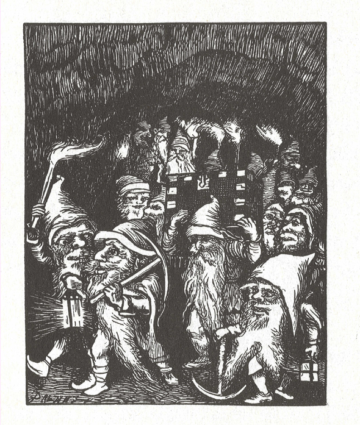

A MYTHICAL HUNT STORY
ACT I · THE TREE OF LIFE

FIELD REPORT // COMPLETE
PAUSED
PERSISTENT WARDEN RECORD
Evidence persists between playthroughs. Choose different responses to complete the archive.
SOURCE LEDGER
All game art is downloaded from public, openly licensed sources. No generative artwork is used.
Forest source ↗Cave source ↗Goblin source ↗